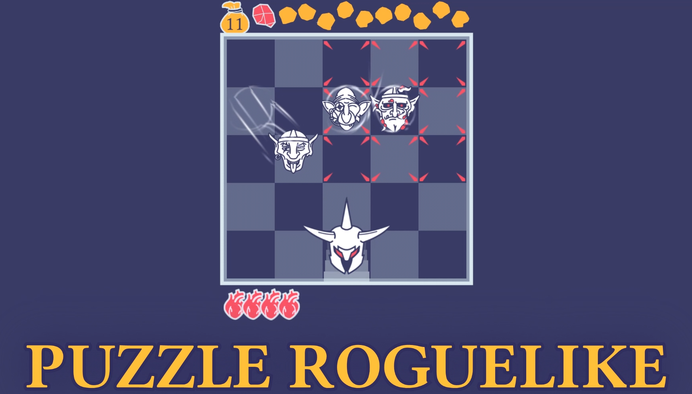
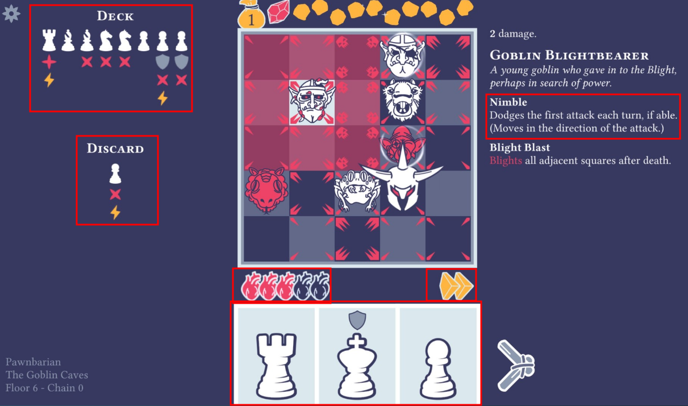

What is Pawnbarian?
A friend of mine recommended that I check this game out as he’d stumbled across it somewhere, somehow. Pawnbarian is what looks to be the first published game by j4nw and it’s a good start. There was an earlier iteration of the game on their itch.io page if you go lookikng for it to try out. Checking out the store page, the game presents itself well and is instantly recognizable since it’s a chess board with unique avatars of somekind for your piece and the enemies. The aesthetic is clean and simple which doesn’t distract while playing the game: 
Gameplay?
The game is simple to undertand too - even if you’ve never been good at chess. You play as an Avatar - the starter is, of course, the Pawnbarian - which comes with usually a single gimmick and a different deck of moves. The Deck of Moves is how you move around the board to kill the enemy tokens - and they’re simply cards with different chess pieces which limit how you move. For example, the pawn moves like the pawn does in chess; the rook moves like the rook and so on. Your moves for the turn are drawn from this deck and you can see both the remaining moves as well as what was discarded so you have some idea of what could happen next round as the cards get pulled. You’re not limited by time since once the all the cards are drawn then they are simply put back and you get access to all of them again. 
As mentioned, your avatar has a gimmick and the Pawnbarians is that when he plays a card with the Cantrip - the lightning symbol - then he gets to move again. And, you can chain these the more you play them to take as many moves as possible. When the cantrip is played then it also draws another card for you to play so you’re never limited by the cards in the deck. At the end of each round, you can use the gold earned by winning the round to add more abilities to your cards. The cantrip is not the only gimmick to add to cards; you can also add diagonal attack or a horizontal attack which will not only harm the square you land on but allow you to hit multiple enemy tokens. There more as well but we’ll limit the discussion to just those as they get the point across.
Enemies also have their own gimmicks, such as the Nimble attribute in the screenshot above, which constrains you simply stomping all over the enemy tokens. There are three dungeons with different enemies and different gimmicks to hinder you in your progress in the dungeons. I do wish there were more than the three dungeons since I stomped most of them much faster than I hoped. That isn’t to say some levels are not a challenge; the Void Grasp afflicted boss of Dungeons three was a frustrating challenge to beat but that’s why we play the game. What is not lacking is the list of different avatars you can play; there are 6 of them with their own ways to play the boards.
If you like Rouge-lights and Chess then you’ll end up enjoying turning this game on when you’re looking for a break from either Chess or Rouge-lights.